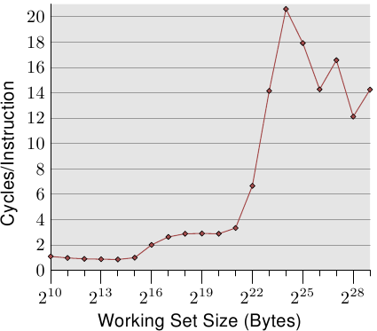
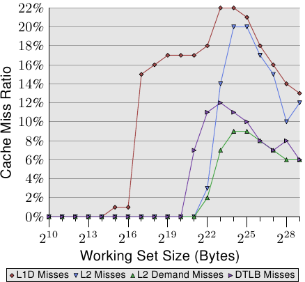
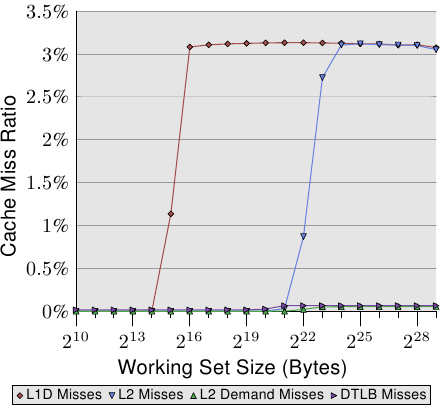
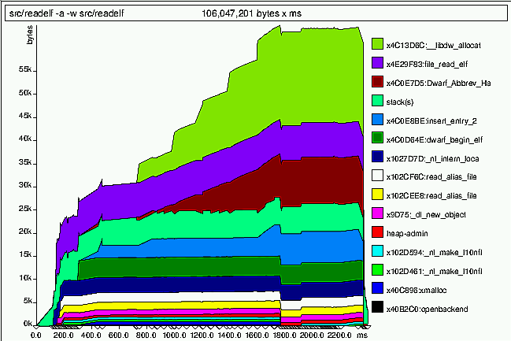
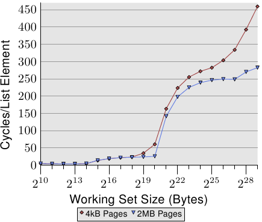

Advertisement
Front, Kernel, Security, Distributions, Development. See your byline here on LWN.net.
Weekly Edition
Return to the Front page
| |||||||||||
Memory part 7: Memory performance tools
[Editor's note: welcome to part 7 of Ulrich Drepper's "What every
programmer should know about memory"; this section is concerned with tools
which can help programmers optimize the memory performance of their code.
Those who have not seen the previous parts of this document can find them
from part 1.]
7 Memory Performance ToolsA wide variety of tools is available to help programmers understand the cache and memory use of a program. Modern processors have performance monitoring hardware that can be used. Some events are hard to measure exactly, so there is also room for simulation. When it comes to higher-level functionality, there are special tools to monitor the execution of a process. We will introduce a set of commonly used tools available on most Linux systems.
7.1 Memory Operation ProfilingProfiling memory operations requires collaboration from the hardware. It is possible to gather some information in software alone, but this is either coarse-grained or merely a simulation. Examples of simulation will be shown in Section 7.2 and Section 7.5. Here we will concentrate on measurable memory effects. Access to performance monitoring hardware on Linux is provided by oprofile. Oprofile provides continuous profiling capabilities as first described in [continuous]; it performs statistical, system-wide profiling with an easy-to-use interface. Oprofile is by no means the only way the performance measurement functionality of processors can be used; Linux developers are working on pfmon which might at some point be sufficiently widely deployed to warrant being described here, too. The interface oprofile provides is simple and minimal but also pretty low-level, even if the optional GUI is used. The user has to select among the events the processor can record. The architecture manuals for the processors describe the events but, oftentimes, it requires extensive knowledge about the processors themselves to interpret the data. Another problem is the interpretation of the collected data. The performance measurement counters are absolute values and can grow arbitrarily. How high is too high for a given counter? A partial answer to this problem is to avoid looking at the absolute values and, instead, relate multiple counters to each other. Processors can monitor more than one event; the ratio of the collected absolute values can then be examined. This gives nice, comparable results. Often the divisor is a measure of processing time, the number of clock cycles or the number of instructions. As an initial stab at program performance, relating just these two numbers by themselves is useful.
 Figure 7.1 shows the Cycles Per Instruction (CPI) for the simple random “Follow” test case for the various working set sizes. The names of the events to collect this information for most Intel processor are CPU_CLK_UNHALTED and INST_RETIRED. As the names suggest, the former counts the clock cycles of the CPU and the latter the number of instructions. We see a picture similar to the cycles per list element measurements we used. For small working set sizes the ratio is 1.0 or even lower. These measurements were made on a Intel Core 2 processor, which is multi-scalar and can work on several instructions at once. For a program which is not limited by memory bandwidth, the ratio can be significantly below 1.0 but, in this case, 1.0 is pretty good. Once the L1d is no longer large enough to hold the working set, the CPI jumps to just below 3.0. Note that the CPI ratio averages the penalties for accessing L2 over all instructions, not just the memory instructions. Using the cycles for list element data, it can be worked out how many instructions per list element are needed. If even the L2 cache is not sufficient, the CPI ratio jumps to more than 20. These are expected results. But the performance measurement counters are supposed to give more insight into what is going on in the processor. For this we need to think about processor implementations. In this document, we are concerned with cache handling details, so we have to look at events related to the caches. These events, their names, and what they count, are processor-specific. This is where oprofile is currently hard to use, irrespective of the simple user interface: the user has to figure out the performance counter details by her/himself. In Section 10 we will see details about some processors. For the Core 2 processor the events to look for are L1D_REPL, DTLB_MISSES, and L2_LINES_IN. The latter can measure both all misses and misses caused by instructions instead of hardware prefetching. The results for the random “Follow” test can be seen in Figure 7.2.
 All ratios are computed using the number of retired instructions (INST_RETIRED). This means that instructions not touching memory are also counted, which, in turn, means that the number of instructions which do touch memory and which suffer a cache miss is even higher than shown in the graph.
The L1d misses tower over all the others since an L2 miss implies, for Intel processors, an L1d miss due to the use of inclusive caches. The processor has 32k of L1d and so we see, as expected, the L1d rate go up from zero at about that working set size (there are other uses of the cache beside the list data structure, which means the increase happens between the 16k and 32k mark). It is interesting to see that the hardware prefetching can keep the miss rate at 1% for a working set size up to and including 64k. After that the L1d rate skyrockets. The L2 miss rate stays zero until the L2 is exhausted; the few misses due to other uses of L2 do not influence the numbers much. Once the size of L2 (221 bytes) is exceeded, the miss rates rise. It is important to notice that the L2 demand miss rate is nonzero. This indicates that the hardware prefetcher does not load all the cache lines needed by instructions later. This is expected, the randomness of the accesses prevents perfect prefetching. Compare this with the data for the sequential read in Figure 7.3.
 In this graph we can see that the L2 demand miss rate is basically zero (note the scale of this graph is different from Figure 7.2). For the sequential access case, the hardware prefetcher works perfectly: almost all L2 cache misses are caused by the prefetcher. The fact that the L1d and L2 miss rates are the same shows that all L1d cache misses are handled by the L2 cache without further delays. This is the ideal case for all programs but it is, of course, hardly ever achievable. The fourth line in both graphs is the DTLB miss rate (Intel has separate TLBs for code and data, DTLB is the data TLB). For the random access case, the DTLB miss rate is significant and contributes to the delays. What is interesting is that the DTLB penalties set in before the L2 misses. For the sequential access case the DTLB costs are basically zero. Going back to the matrix multiplication example in Section 6.2.1 and the example code in Section 9.1, we can make use of three more counters. The SSE_PRE_MISS, SSE_PRE_EXEC, and LOAD_HIT_PRE counters can be used to see how effective the software prefetching is. If the code in Section 9.1 is run we get the following results:
The low useful NTA (non-temporal aligned) prefetch ratio indicates that many prefetch instructions are executed for cache lines which are already loaded, so no work is needed. This means the processor wastes time to decode the prefetch instruction and look up the cache. One cannot judge the code too harshly, though. Much depends on the size of the caches of the processor used; the hardware prefetcher also plays a role. The low late NTA prefetch ratio is misleading. The ratio means that 2.65% of all prefetch instructions are issued too late. The instruction which needs the data is executed before the data could be prefetched into the cache. It must be kept in mind that only 2.84%+2.65%=5.5% of the prefetch instructions were of any use. Of the NTA prefetch instructions which are useful, 48% did not finish in time. The code therefore can be optimized further:
It is left as an exercise to the reader to determine the best solution for the available hardware. The exact hardware specification plays a big role. On Core 2 processors the latency of the SSE arithmetic operations is 1 cycle. Older versions had a latency of 2 cycles, meaning that the hardware prefetcher and the prefetch instructions had more time to bring in the data. To determine where prefetches might be needed—or are unnecessary—one can use the opannotate program. It lists the source or assembler code of the program and shows the instructions where the event was recognized. Note that there are two sources of vagueness:
The annotated listings are useful for more than determining the prefetching information. Every event is recorded with the instruction pointer; it is therefore also possible to pinpoint other hot spots in the program. Locations which are the source of many INST_RETIRED events are executed frequently and deserve to be tuned. Locations where many cache misses are reported might warrant a prefetch instruction to avoid the cache miss.
One type of event which can be measured without hardware support is page faults. The OS is responsible for resolving page faults and, on those occasions, it also counts them. It distinguishes two kinds of page faults:
Obviously, major page faults are significantly more expensive than minor page faults. But the latter are not cheap either. In either case an entry into the kernel is necessary, a new page must be found, the page must be cleared or populated with the appropriate data, and the page table tree must be modified accordingly. The last step requires synchronization with other tasks reading or modifying the page table tree, which might introduce further delays. The easiest way to retrieve information about the page fault counts is to use the time tool. Note: use the real tool, not the shell builtin. The output can be seen in Figure 7.4. {The leading backslash prevents the use of the built-in command.}
$ \time ls /etc [...] 0.00user 0.00system 0:00.02elapsed 17%CPU (0avgtext+0avgdata 0maxresident)k 0inputs+0outputs (1major+335minor)pagefaults 0swaps The interesting part here is the last line. The time tool reports one major and 335 minor page faults. The exact numbers vary; in particular, repeating the run immediately will likely show that there are now no major page faults at all. If the program performs the same action, and nothing changes in the environment, the total page fault count will be stable. An especially sensitive phase with respect to page faults is program start-up. Each page which is used will produce a page fault; the visible effect (especially for GUI applications) is that the more pages that are used, the longer it takes for the program to start working. In Section 7.5 we will see a tool to measure this effect specifically. Under the hood, the time tool uses the rusage functionality. The wait4 system call fills in a struct rusage object when the parent waits for a child to terminate; that is exactly what is needed for the time tool. But it is also possible for a process to request information about its own resource usage (that is where the name rusage comes from) or the resource usage of its terminated children.
#include <sys/resource.h> int getrusage(__rusage_who_t who, struct rusage *usage) The who parameter specifies which process the information is requested for. Currently, RUSAGE_SELF and RUSAGE_CHILDREN are defined. The resource usage of the child processes is accumulated when each child terminates. It is a total value, not the usage of an individual child process. Proposals to allow requesting thread-specific information exist, so it is likely that we will see RUSAGE_THREAD in the near future. The rusage structure is defined to contain all kinds of metrics, including execution time, the number of IPC messages sent and memory used, and the number of page faults. The latter information is available in the ru_minflt and ru_majflt members of the structure. A programmer who tries to determine where her program loses performance due to page faults could regularly request the information and then compare the returned values with the previous results. From the outside, the information is also visible if the requester has the necessary privileges. The pseudo file /proc/<PID>/stat, where <PID> is the process ID of the process we are interested in, contains the page fault numbers in the tenth to fourteenth fields. They are pairs of the process's and its childrens' cumulative minor and major page faults, respectively.
7.2 Simulating CPU CachesWhile the technical description of how a cache works is relatively easy to understand, it is not so easy to see how an actual program behaves with respect to cache. Programmers are not directly concerned with the values of addresses, be they absolute nor relative. Addresses are determined, in part, by the linker and, in part, at runtime by the dynamic linker and the kernel. The generated assembly code is expected to work with all possible addresses and, in the source language, there is not even a hint of absolute address values left. So it can be quite difficult to get a sense for how a program is making use of memory. {When programming close to the hardware this might be different, but this is of no concern to normal programming and, in any case, is only possible for special addresses such as memory-mapped devices.} CPU-level profiling tools such as oprofile (as described in Section 7.1) can help to understand the cache use. The resulting data corresponds to the actual hardware, and it can be collected relatively quickly if fine-grained collection is not needed. As soon as more fine-grained data is needed, oprofile is not usable anymore; the thread would have to be interrupted too often. Furthermore, to see the memory behavior of the program on different processors, one actually has to have such machines and execute the program on them. This is sometimes (often) not possible. One example is the data from Figure 3.8. To collect such data with oprofile one would have to have 24 different machines, many of which do not exist. The data in that graph was collected using a cache simulator. This program, cachegrind, uses the valgrind framework, which was initially developed to check for memory handling related problems in a program. The valgrind framework simulates the execution of a program and, while doing this, it allows various extensions, such as cachegrind, to hook into the execution framework. The cachegrind tool uses this to intercept all uses of memory addresses; it then simulates the operation of L1i, L1d, and L2 caches with a given size, cache line size, and associativity. To use the tool a program must be run using valgrind as a wrapper:
valgrind --tool=cachegrind command arg In this simplest form the program command is executed with the parameter arg while simulating the three caches using sizes and associativity corresponding to that of the processor it is running on. One part of the output is printed to standard error when the program is running; it consists of statistics of the total cache use as can be seen in Figure 7.5.
==19645== I refs: 152,653,497 ==19645== I1 misses: 25,833 ==19645== L2i misses: 2,475 ==19645== I1 miss rate: 0.01% ==19645== L2i miss rate: 0.00% ==19645== ==19645== D refs: 56,857,129 (35,838,721 rd + 21,018,408 wr) ==19645== D1 misses: 14,187 ( 12,451 rd + 1,736 wr) ==19645== L2d misses: 7,701 ( 6,325 rd + 1,376 wr) ==19645== D1 miss rate: 0.0% ( 0.0% + 0.0% ) ==19645== L2d miss rate: 0.0% ( 0.0% + 0.0% ) ==19645== ==19645== L2 refs: 40,020 ( 38,284 rd + 1,736 wr) ==19645== L2 misses: 10,176 ( 8,800 rd + 1,376 wr) ==19645== L2 miss rate: 0.0% ( 0.0% + 0.0% ) The total number of instructions and memory references is given, along with the number of misses they produce for the L1i/L1d and L2 cache, the miss rates, etc. The tool is even able to split the L2 accesses into instruction and data accesses, and all data cache uses are split in read and write accesses. It becomes even more interesting when the details of the simulated caches are changed and the results compared. Through the use of the —I1, —D1, and —L2 parameters, cachegrind can be instructed to disregard the processor's cache layout and use that specified on the command line. For example:
valgrind --tool=cachegrind --L2=8388608,8,64 command arg would simulate an 8MB L2 cache with 8-way set associativity and 64 byte cache line size. Note that the —L2 option appears on the command line before the name of the program which is simulated. This is not all cachegrind can do. Before the process exits cachegrind writes out a file named cachegrind.out.XXXXX where XXXXX is the PID of the process. This file contains the summary information and detailed information about the cache use in each function and source file. The data can be viewed using the cg_annotate program. The output this program produces contains the cache use summary which was printed when the process terminated, along with a detailed summary of the cache line use in each function of the program. Generating this per-function data requires that cg_annotate is able to match addresses to functions. This means debug information should be available for best results. Failing that, the ELF symbol tables can help a bit but, since internal symbols are not listed in the dynamic symbol table, the results are not complete. Figure 7.6 shows part of the output for the same program run as Figure 7.5.
--------------------------------------------------------------------------------
Ir I1mr I2mr Dr D1mr D2mr Dw D1mw D2mw file:function
--------------------------------------------------------------------------------
53,684,905 9 8 9,589,531 13 3 5,820,373 14 0 ???:_IO_file_xsputn@@GLIBC_2.2.5
36,925,729 6,267 114 11,205,241 74 18 7,123,370 22 0 ???:vfprintf
11,845,373 22 2 3,126,914 46 22 1,563,457 0 0 ???:__find_specmb
6,004,482 40 10 697,872 1,744 484 0 0 0 ???:strlen
5,008,448 3 2 1,450,093 370 118 0 0 0 ???:strcmp
3,316,589 24 4 757,523 0 0 540,952 0 0 ???:_IO_padn
2,825,541 3 3 290,222 5 1 216,403 0 0 ???:_itoa_word
2,628,466 9 6 730,059 0 0 358,215 0 0 ???:_IO_file_overflow@@GLIBC_2.2.5
2,504,211 4 4 762,151 2 0 598,833 3 0 ???:_IO_do_write@@GLIBC_2.2.5
2,296,142 32 7 616,490 88 0 321,848 0 0 dwarf_child.c:__libdw_find_attr
2,184,153 2,876 20 503,805 67 0 435,562 0 0 ???:__dcigettext
2,014,243 3 3 435,512 1 1 272,195 4 0 ???:_IO_file_write@@GLIBC_2.2.5
1,988,697 2,804 4 656,112 380 0 47,847 1 1 ???:getenv
1,973,463 27 6 597,768 15 0 420,805 0 0 dwarf_getattrs.c:dwarf_getattrs
Figure 7.6: cg_annotate Output The Ir, Dr, and Dw columns show the total cache use, not cache misses, which are shown in the following two columns. This data can be used to identify the code which produces the most cache misses. First, one probably would concentrate on L2 cache misses, then proceed to optimizing L1i/L1d cache misses. cg_annotate can provide the data in more detail. If the name of a source file is given, it also annotates (hence the program's name) each line of the source file with the number of cache hits and misses corresponding to that line. This information allows the programmer to drill down to the exact line where cache misses are a problem. The program interface is a bit raw: as of this writing, the cachegrind data file and the source file must be in the same directory. It should, at this point, be noted again: cachegrind is a simulator which does not use measurements from the processor. The actual cache implementation in the processor might very well be quite different. cachegrind simulates Least Recently Used (LRU) eviction, which is likely to be too expensive for caches with large associativity. Furthermore, the simulation does not take context switches and system calls into account, both of which can destroy large parts of L2 and must flush L1i and L1d. This causes the total number of cache misses to be lower than experienced in reality. Nevertheless, cachegrind is a nice tool to learn about a program's memory use and its problems with memory.
7.3 Measuring Memory UsageKnowing how much memory a program allocates and possibly where the allocation happens is the first step to optimizing its memory use There are, fortunately, some easy-to-use programs available which do not even require that the program be recompiled or specifically modified. For the first tool, called massif, it is sufficient to not strip the debug information which the compiler can automatically generate. It provides an overview of the accumulated memory use over time. Figure 7.7 shows an example of the generated output.
 Like cachegrind (Section 7.2), massif is a tool using the valgrind infrastructure. It is started using
valgrind --tool=massif command arg where command arg is the program which is observed and its parameter(s), The program will be simulated and all calls to memory allocation functions are recognized. The call site is recorded along with a timestamp value; the new allocation size is added to both the whole-program total and total for the specific call site. The same applies to the functions which free memory where, obviously, the size of the freed block is subtracted from the appropriated sums. This information can then be used to create a graph showing the memory use over the lifetime of the program, splitting each time value according to the location which requested the allocation. Before the process is terminated massif creates two files: massif.XXXXX.txt and massif.XXXXX.ps, where XXXXX in both cases is the PID of the process. The .txt file is a summary of the memory use for all call sites and the .ps is what can be seen in Figure 7.7. Massif can also record the program's stack usage, which can be useful to determine the total memory footprint of an application. But this is not always possible. In some situations (some thread stacks or when signaltstack is used) the valgrind runtime cannot know about the limits of the stack . In these situations, it also does not make much sense to add these stacks' sizes to the total. There are several other situations where it makes no sense. If a program is affected by this, massif should be started with the addition option —stacks=no. Note, this is an option for valgrind and therefore must come before the name of the program which is being observed. Some programs provide their own memory allocation functions or wrapper functions around the system's allocation functions. In the first case, allocations are normally missed; in the second case, the recorded call sites hide information, since only the address of the call in the wrapper function is recorded. For this reason, it is possible to add additional functions to the list of allocation functions. The —alloc-fn=xmalloc parameter would specify that the function xmalloc is also an allocation function, which is often the case in GNU programs. Calls to xmalloc are recorded, but not the allocation calls made from within xmalloc. The second tool is called memusage; it is part of the GNU C library. It is a simplified version of massif (but existed a long time before massif). It only records the total memory use for heap (including possible calls to mmap etc. if the -m option is given) and, optionally, the stack. The results can be shown as a graph of the total memory use over time or, alternatively, linearly over the calls made to allocation functions. The graphs are created separately by the memusage script which, just as with valgrind, has to be used to start the application:
memusage command arg The -p IMGFILE option must be used to specify that the graph should be generated in the file IMGFILE, which will be a PNG file. The code to collect the data is run in the actual program itself, it is not an simulation like valgrind. This means memusage is much faster than massif and usable in situations where massif would be not useful. Besides total memory consumption, the code also records allocation sizes and, on program termination, it shows a histogram of the used allocation sizes. This information is written to standard error. Sometimes it is not possible (or feasible) to call the program which is supposed to be observed directly. An example is the compiler stage of gcc, which is started by the gcc driver program. In this case the name of the program which should be observed must be provided to the memusage script using the -n NAME parameter. This parameter is also useful if the program which is observed starts other programs. If no program name is specified all started programs will be profiled. Both programs, massif and memusage, have additional options. A programmer finding herself in the position needing more functionality should first consult the manual or help messages to make sure the additional functionality is not already implemented. Now that we know how the data about memory allocation can be captured, it is necessary to discuss how this data can be interpreted in the context of memory and cache use. The main aspects of efficient dynamic memory allocation are linear allocation and compactness of the used portion. This goes back to making prefetching efficient and reducing cache misses. A program which has to read in an arbitrary amount of data for later processing could do this by creating a list where each of the list elements contains a new data item. The overhead for this allocation method might be minimal (one pointer for a single-linked list) but the cache effects when using the data can reduce the performance dramatically. One problem is, for instance, that there is no guarantee that sequentially allocated memory is laid out sequentially in memory. There are many possible reasons for this:
If data must be allocated up front for later processing, the linked-list approach is clearly a bad idea. There is no guarantee (or even likelihood) that the consecutive elements in the list are laid out consecutively in memory. To ensure contiguous allocations, that memory must not be allocated in small chunks. Another layer of memory handling must be used; it can easily be implemented by the programmer. An alternative is to use the obstack implementation available in the GNU C library. This allocator requests large blocks of memory from the system's allocator and then hands arbitrarily large or small blocks of memory out. These allocations are always sequential unless the large memory chunk is exhausted, which is, depending on the requested allocation sizes, pretty rare. Obstacks are not a complete replacement for a memory allocator, they have limited abilities to free objects. See the GNU C library manual for details. So, how can a situation where the use of obstacks (or similar techniques) is advisable be recognized from the graphs? Without consulting the source, possible candidates for the changes cannot be identified, but the graph can provide an entry point for the search. If many allocations are made from the same location, this could mean that allocation in bulk might help. In Figure 7.7, we can see such a possible candidate in the allocations at address 0x4c0e7d5. From about 800ms into the run until 1,800ms into the run this is the only area (except the top, green one) which grows. Moreover, the slope is not steep, which means we have a large number of relatively small allocations. This is, indeed, a candidate for the use of obstacks or similar techniques. Another problem the graphs can show is when the total number of allocations is high. This is especially easy to see if the graph is not drawn linearly over time but, instead, linearly over the number of calls (the default with memusage). In that case, a gentle slope in the graph means a lot of small allocations. memusage will not say where the allocations took place, but the comparison with massif's output can say that, or the programmer might recognize it right away. Many small allocations should be consolidated to achieve linear memory use. But there is another, equally important, aspect to this latter class of cases: many allocations also means higher overhead in administrative data. This by itself might not be that problematic. The red area named “heap-admin” represents this overhead in the massif graph and it is quite small. But, depending on the malloc implementation, this administrative data is allocated along with the data blocks, in the same memory. For the current malloc implementation in the GNU C library, this is the case: every allocated block has at least a 2-word header (8 bytes for 32-bit platforms, 16 bytes for 64-bit platforms). In addition, block sizes are often a bit larger than necessary due to the way memory is administrated (rounding up block sizes to specific multiples). This all means that memory used by the program is interspersed with memory only used by the allocator for administrative purposes. We might see something like this:
Each block represents one memory word and, in this small region of memory, we have four allocated blocks. The overhead due to the block header and padding is 50%. Due to the placement of the header, this automatically means that the effective prefetch rate of the processor is lowered by up to 50% as well. If the blocks were be processed sequentially (to take maximum advantage of prefetching), the processor would read all the header and padding words into the cache, even though they are never supposed to be read from or written to by the application itself. Only the runtime uses the header words, and the runtime only comes into play when the block is freed. Now, one could argue that the implementation should be changed to put the administrative data somewhere else. This is indeed done in some implementations, and it might prove to be a good idea. There are many aspects to be kept in mind, though, security not being the least of them. Regardless of whether we might see a change in the future, the padding issue will never go away (amounting to 16% of the data in the example, when ignoring the headers). Only if the programmer directly takes control of allocations can this be avoided. When alignment requirements come into play there might still be holes, but this is also something under control of the programmer.
7.4 Improving Branch PredictionIn Section 6.2.2, two methods to improve L1i use through branch prediction and block reordering were mentioned: static prediction through __builtin_expect and profile guided optimization (PGO). Correct branch prediction has performance impacts, but here we are interested in the memory usage improvements. The use of __builtin_expect (or better the likely and unlikely macros) is simple. The definitions are placed in a central header and the compiler takes care of the rest. There is a little problem, though: it is easy enough for a programmer to use likely when really unlikely was meant and vice versa. Even if somebody uses a tool like oprofile to measure incorrect branch predictions and L1i misses these problems are hard to detect. There is one easy method, though. The code in Section 9.2 shows an alternative definition of the likely and unlikely macros which measure actively, at runtime, whether the static predictions are correct or not. The results can then be examined by the programmer or tester and adjustments can be made. The measurements do not actually take the performance of the program into account, they simply test the static assumptions made by the programmer. More details can be found, along with the code, in the section referenced above. PGO is quite easy to use with gcc these days. It is a three-step process, though, and certain requirements must be fulfilled. First, all source files must be compiled with the additional -fprofile-generate option. This option must be passed to all compiler runs and to the command which links the program. Mixing object files compiled with and without this option is possible, but GPO will not do any good for those that do not have it enabled. The compiler generates a binary which behaves normally except that it is significantly larger and slower since it records (and emits) all kinds of information about branches taken or not. The compiler also emits a file with the extension .gcno for each input file. This file contains information related to the branches in the code. It must be preserved for later. Once the program binary is available, it should be used to run a representative set of workloads. Whatever workload is used, the final binary will be optimized to do this task well. Consecutive runs of the program are possible and, in general necessary; all the runs will contribute to the same output file. Before the program terminates, the data collected during the program run is written out into files with the extension .gcda. These files are created in the directory which contains the source file. The program can be executed from any directory, and the binary can be copied, but the directory with the sources must be available and writable. Again, one output file is created for each input source file. If the program is run multiple times, it is important that the .gcda files of the previous run are found in the source directories since otherwise the data of the runs cannot be accumulated in one file. When a representative set of tests has been run, it is time to recompile the application. The compiler has to be able to find the .gcda files in the same directory which holds the source files. The files cannot be moved since the compiler would not find them and the embedded checksum for the files would not match anymore. For the recompilation, replace the -fprofile-generate parameter with -fprofile-use. It is essential that the sources do not change in any way that would change the generated code. That means: it is OK to change white spaces and edit comments, but adding more branches or basic blocks invalidates the collected data and the compilation will fail. This is all the programmer has to do; it is a fairly simple process. The most important thing to get right is the selection of representative tests to perform the measurements. If the test workload does not match the way the program is actually used, the performed optimizations might actually do more harm than good. For this reason, is it often hard to use PGO for libraries. Libraries can be used in many—sometimes widely different—scenarios. Unless the use cases are indeed similar, it is usually better to rely exclusively on static branch prediction using __builtin_expect. A few words on the .gcno and .gcda files. These are binary files which are not immediately usable for inspection. It is possible, though, to use the gcov tool, which is also part of the gcc package, to examine them. This tool is mainly used for coverage analysis (hence the name) but the file format used is the same as for PGO. The gcov tool generates output files with the extension .gcov for each source file with executed code (this might include system headers). The files are source listings which are annotated, according to the parameters given to gcov, with branch counter, probabilities, etc.
7.5 Page Fault OptimizationOn demand-paged operating systems like Linux, an mmap call only modifies the page tables. It makes sure that, for file-backed pages, the underlying data can be found and, for anonymous memory, that, on access, pages initialized with zeros are provided. No actual memory is allocated at the time of the mmap call. {If you want to say “Wrong!” wait a second, it will be qualified later that there are exceptions.} The allocation part happens when a memory page is first accessed, either by reading or writing data, or by executing code. In response to the ensuing page fault, the kernel takes control and determines, using the page table tree, the data which has to be present on the page. This resolution of the page fault is not cheap, but it happens for every single page which is used by a process. To minimize the cost of page faults, the total number of used pages has to be reduced. Optimizing the code for size will help with this. To reduce the cost of a specific code path (for instance, the start-up code), it is also possible to rearrange code so that, in that code path, the number of touched pages is minimized. It is not easy to determine the right order, though.
The author wrote a tool, based on the valgrind toolset, to measure page faults as they happen. Not the number of page faults, but the reason why they happen. The pagein tool emits information about the order and timing of page faults. The output, written to a file named pagein.<PID>, looks as in Figure 7.8.
0 0x3000000000 C 0 0x3000000B50: (within /lib64/ld-2.5.so) 1 0x 7FF000000 D 3320 0x3000000B53: (within /lib64/ld-2.5.so) 2 0x3000001000 C 58270 0x3000001080: _dl_start (in /lib64/ld-2.5.so) 3 0x3000219000 D 128020 0x30000010AE: _dl_start (in /lib64/ld-2.5.so) 4 0x300021A000 D 132170 0x30000010B5: _dl_start (in /lib64/ld-2.5.so) 5 0x3000008000 C 10489930 0x3000008B20: _dl_setup_hash (in /lib64/ld-2.5.so) 6 0x3000012000 C 13880830 0x3000012CC0: _dl_sysdep_start (in /lib64/ld-2.5.so) 7 0x3000013000 C 18091130 0x3000013440: brk (in /lib64/ld-2.5.so) 8 0x3000014000 C 19123850 0x3000014020: strlen (in /lib64/ld-2.5.so) 9 0x3000002000 C 23772480 0x3000002450: dl_main (in /lib64/ld-2.5.so) The second column specifies the address of the page which is paged-in. Whether it is a code or data page is indicated in the third column, which contains `C' or `D' respectively. The fourth column specifies the number of cycles which passed since the first page fault. The rest of the line is valgrind's attempt to find a name for the address which caused the page fault. The address value itself is correct but the name is not always accurate if no debug information is available. In the example in Figure 7.8, execution starts at address 0x3000000B50, which forces the page at address 0x3000000000 to be paged in. Shortly after that, the page after this is also brought in; the function called on that page is _dl_start. The initial code accesses a variable on page 0x7FF000000. This happens just 3,320 cycles after the first page fault and is most likely the second instruction of the program (just three bytes after the first instruction). If one looks at the program, one will notice that there is something peculiar about this memory access. The instruction in question is a call instruction, which does not explicitly load or store data. It does store the return address on the stack, though, and this is exactly what happens here. This is not the official stack of the process, though, it is valgrind's internal stack of the application. This means when interpreting the results of pagein it is important to keep in mind that valgrind introduces some artifacts. The output of pagein can be used to determine which code sequences should ideally be adjacent in the program code. A quick look at the /lib64/ld-2.5.so code shows that the first instructions immediately call the function _dl_start, and that these two places are on different pages. Rearranging the code to move the code sequences onto the same page can avoid—or at least delay—a page fault. It is, so far, a cumbersome process to determine what the optimal code layout should be. Since the second use of a page is, by design, not recorded, one needs to use trial and error to see the effects of a change. Using call graph analysis, it is possible to guess about possible call sequences; this might help speed up the process of sorting the functions and variables. At a very coarse level, the call sequences can be seen by looking a the object files making up the executable or DSO. Starting with one or more entry points (i.e., function names), the chain of dependencies can be computed. Without much effort this works well at the object file level. In each round, determine which object files contain needed functions and variables. The seed set has to be specified explicitly. Then determine all undefined references in those object files and add them to the set of needed symbols. Repeat until the set is stable. The second step in the process is to determine an order. The various object files have to be grouped together to fill as few pages as possible. As an added bonus, no function should cross over a page boundary. A complication in all this is that, to best arrange the object files, it has to be known what the linker will do later. The important fact here is that the linker will put the object files into the executable or DSO in the same order in which they appear in the input files (e.g., archives), and on the command line. This gives the programmer sufficient control. For those who are willing to invest a bit more time, there have been successful attempts at reordering made using automatic call tracing via the __cyg_profile_func_enter and __cyg_profile_func_exit hooks gcc inserts when called with the -finstrument-functions option [oooreorder]. See the gcc manual for more information on these __cyg_* interfaces. By creating a trace of the program execution, the programmer can more accurately determine the call chains. The results in [oooreorder] are a 5% decrease in start-up costs, just through reordering of the functions. The main benefit is the reduced number of page faults, but the TLB cache also plays a role—an increasingly important role given that, in virtualized environments, TLB misses become significantly more expensive. By combining the analysis of the pagein tool with the call sequence information, it should be possible to optimize certain phases of the program (such as start-up) to minimize the number of page faults.
The Linux kernel provides two additional mechanisms to avoid page faults. The first one is a flag for mmap which instructs the kernel to not only modify the page table but, in fact, to pre-fault all the pages in the mapped area. This is achieved by simply adding the MAP_POPULATE flag to the fourth parameter of the mmap call. This will cause the mmap call to be significantly more expensive, but, if all pages which are mapped by the call are being used right away, the benefits can be large. Instead of having a number of page faults, which each are pretty expensive due to the overhead incurred by synchronization requirements etc., the program would have one, more expensive, mmap call. The use of this flag has disadvantages, though, in cases where a large portion of the mapped pages are not used soon (or ever) after the call. Mapped, unused pages are obviously a waste of time and memory. Pages which are immediately pre-faulted and only much later used also can clog up the system. The memory is allocated before it is used and this might lead to shortages of memory in the meantime. On the other hand, in the worst case, the page is simply reused for a new purpose (since it has not been modified yet), which is not that expensive but still, together with the allocation, adds some cost. The granularity of MAP_POPULATE is simply too coarse. And there is a second possible problem: this is an optimization; it is not critical that all pages are, indeed, mapped in. If the system is too busy to perform the operation the pre-faulting can be dropped. Once the page is really used the program takes the page fault, but this is not worse than artificially creating resource scarcity. An alternative is to use the POSIX_MADV_WILLNEED advice with the posix_madvise function. This is a hint to the operating system that, in the near future, the program will need the page described in the call. The kernel is free to ignore the advice, but it also can pre-fault pages. The advantage here is that the granularity is finer. Individual pages or page ranges in any mapped address space area can be pre-faulted. For memory-mapped files which contain a lot of data which is not used at runtime, this can have huge advantages over using MAP_POPULATE. Beside these active approaches to minimizing the number of page faults, it is also possible to take a more passive approach which is popular with the hardware designers. A DSO occupies neighboring pages in the address space, one range of pages each for the code and the data. The smaller the page size, the more pages are needed to hold the DSO. This, in turn, means more page faults, too. Important here is that the opposite is also true. For larger page sizes, the number of necessary pages for the mapping (or anonymous memory) is reduced; with it falls the number of page faults. Most architectures support page sizes of 4k. On IA-64 and PPC64, page sizes of 64k are also popular. That means the smallest unit in which memory is given out is 64k. The value has to be specified when compiling the kernel and cannot be changed dynamically (at least not at the moment). The ABIs of the multiple-page-size architectures are designed to allow running an application with either page size. The runtime will make the necessary adjustments, and a correctly-written program will not notice a thing. Larger page sizes mean more waste through partially-used pages, but, in some situations, this is OK.
Most architectures also support very large page sizes of 1MB or more. Such pages are useful in some situations, too, but it makes no sense to have all memory given out in units that large. The waste of physical RAM would simply be too large. But very large pages have their advantages: if huge data sets are used, storing them in 2MB pages on x86-64 would require 511 fewer page faults (per large page) than using the same amount of memory with 4k pages. This can make a big difference. The solution is to selectively request memory allocation which, just for the requested address range, uses huge memory pages and, for all the other mappings in the same process, uses the normal page size. Huge page sizes come with a price, though. Since the physical memory used for large pages must be continuous, it might, after a while, not be possible to allocate such pages due to memory fragmentation. prevent this. People are working on memory defragmentation and fragmentation avoidance, but it is very complicated. For large pages of, say, 2MB the necessary 512 consecutive pages are always hard to come by, except at one time: when the system boots up. This is why the current solution for large pages requires the use of a special filesystem, hugetlbfs. This pseudo filesystem is allocated on request by the system administrator by writing the number of huge pages which should be reserved to
/proc/sys/vm/nr_hugepages the number of huge pages which should be reserved. This operation might fail if not enough continuous memory can be located. The situation gets especially interesting if virtualization is used. A system virtualized using the VMM model does not directly access physical memory and, therefore, cannot by itself allocate the hugetlbfs. It has to rely on the VMM, and this feature is not guaranteed to be supported. For the KVM model, the Linux kernel running the KVM module can perform the hugetlbfs allocation and possibly pass a subset of the pages thus allocated on to one of the guest domains. Later, when a program needs a large page, there are multiple possibilities:
In the first case, the hugetlbfs need not be mounted. Code requesting one or more large pages could look like this:
The critical parts of this code sequence are the use of the SHM_HUGETLB flag and the choice of the right value for LENGTH, which must be a multiple of the huge page size for the system. Different architectures have different values. The use of the System V shared memory interface has the nasty problem of depending on the key argument to differentiate (or share) mappings. The ftok interface can easily produce conflicts which is why, if possible, it is better to use other mechanisms. If the requirement to mount the hugetlbfs filesystem is not a problem, it is better to use it instead of System V shared memory. The only real problems with using the special filesystem are that the kernel must support it, and that there is no standardized mount point yet. Once the filesystem is mounted, for instance at /dev/hugetlb, a program can make easy use of it:
By using the same file name in the open call, multiple processes can share the same huge pages and collaborate. It is also possible to make the pages executable, in which case the PROT_EXEC flag must also be set in the mmap call. As in the System V shared memory example, the value of LENGTH must be a multiple of the system's huge page size. A defensively-written program (as all programs should be) can determine the mount point at runtime using a function like this:
More information for both these cases can be found in the hugetlbpage.txt file which comes as part of the kernel source tree. The file also describes the special handling needed for IA-64.
 To illustrate the advantages of huge pages, Figure 7.9 shows the results of running the random Follow test for NPAD=0. This is the same data shown in Figure 3.15, but, this time, we measure the data also with memory allocated in huge pages. As can be seen the performance advantage can be huge. For 220 bytes the test using huge pages is 57% faster. This is due to the fact that this size still fits completely into one single 2MB page and, therefore, no DTLB misses occur. After this point, the winnings are initially smaller but grow again with increasing working set size. The huge pages test is 38% faster for the 512MB working set size. The curve for the huge page test has a plateau at around 250 cycles. Beyond working sets of 227 bytes, the numbers rise significantly again. The reason for the plateau is that 64 TLB entries for 2MB pages cover 227 bytes. As these numbers show, a large part of the costs of using large working set sizes comes from TLB misses. Using the interfaces described in this section can pay off big-time. The numbers in the graph are, most likely, upper limits, but even real-world programs show a significant speed-up. Databases, since they use large amounts of data, are among the programs which use huge pages today. There is currently no way to use large pages to map file-backed data. There is interest in implementing this capability, but the proposals made so far all involve explicitly using large pages, and they rely on the hugetlbfs filesystem. This is not acceptable: large page use in this case must be transparent. The kernel can easily determine which mappings are large and automatically use large pages. A big problem is that the kernel does not always know about the use pattern. If the memory, which could be mapped as a large page, later requires 4k-page granularity (for instance, because the protection of parts of the memory range is changed using mprotect) a lot of precious resources, in particular the linear physical memory, will have been wasted. So it will certainly be some more time before such an approach is successfully implemented. (Log in to post comments)
Memory part 7: Memory performance tools Posted Nov 7, 2007 15:10 UTC (Wed) by rossburton (subscriber, #7254) [Link] There is a new frontend to OProfile, http://projects.o-hand.com/oprofileui, which isn't as low-level as the standard oprofile frontend and as a bonus even gives you the ability to profile remote hosts.
Memory part 7: Memory performance tools Posted Nov 7, 2007 17:01 UTC (Wed) by james (subscriber, #1325) [Link] ...since an L1d miss implies, for Intel processors, an L2 miss...Presumably the other way round (L2 miss implies L1 miss).
Memory part 7: Memory performance tools Posted Nov 8, 2007 17:13 UTC (Thu) by mebrown (subscriber, #7960) [Link] Actually, since Intel processors use an inclusive cache, the original statement is correct. If it isnt in L1, it isnt in L2, either, since L2 includes all the contents of L1.
L1/L2 Posted Nov 8, 2007 17:22 UTC (Thu) by corbet (editor, #1) [Link] Actually, since Intel processors use an inclusive cache, the original statement is correct. If it isnt in L1, it isnt in L2, either, since L2 includes all the contents of L1. L2 contains everything in L1, but, since it's larger, it contains data which is not in L1 as well. If L2 cannot satisfy an occasional L1 cache miss, why does it exist? I have a question into Ulrich on how he really wanted this paragraph to read, stay tuned.
L1/L2 Posted Nov 8, 2007 17:31 UTC (Thu) by mebrown (subscriber, #7960) [Link] Right. Doh. In my defense, I had not actually drank any of my coffee before posting that comment.
Memory part 7: Memory performance tools Posted Nov 7, 2007 20:32 UTC (Wed) by aleXXX (subscriber, #2742) [Link] It would be nice if subscribers could get these articles as nice pdf, one for each part or also all parts together with a TOC, which would actually make almost a book. The "Printable page" link is not that good, it still has the comments at the bottom and the links at the top. Alex
PDF version Posted Nov 7, 2007 20:37 UTC (Wed) by corbet (editor, #1) [Link] Ulrich plans to release a PDF of the entire document after the whole thing has been serialized here (only one installment to go!).
PDF version Posted Nov 8, 2007 6:59 UTC (Thu) by frazier (subscriber, #3060) [Link] I've been waiting for the end of this series to present it to more indepth programming friends of mine (I just work in scripting languages).Like a lot of the kernel stuff, I appreciate that LWN is actively covering these things, even though it doesn't directly benefit me.
Memory part 7: Memory performance tools Posted Nov 8, 2007 6:37 UTC (Thu) by njs (subscriber, #40338) [Link] It's curious that Ulrich doesn't mention callgrind and its extraordinary front-end, kcachegrind. Stock oprofile and cachegrind are okay for programs written in a style where each function is reasonably large and performs a relatively discrete task -- this seems to include most traditional C programs. But IME they become totally useless with, say, anything written in C++, or really anything with many abstraction layers in it. They tell you that, say, you are suffering a lot of cache misses in your std::vector<>'s [] (element access) operator -- which is fine, but tells you nothing about *which* of the thousands of call sites in your source is actually causing the problem and should have its loops interchanged or whatever. Callgrind solves this problem, and kcachegrind makes call-graph data understandable and usable. Oprofile has a call-graph profiling mode too, but I at least find it very obscure (I only managed to understand what it was measuring by asking the author on IRC). Also, textual output just doesn't cut it for this sort of thing, you really need some tools to visualize the data. So some might find useful a little script I wrote, that converts oprofile call-graph profiles into something kcachegrind can read (see the oprofile manual to learn how to get call-graph profiles): http://roberts.vorpus.org/~njs/op2calltree.py
Memory part 7: Memory performance tools Posted Nov 8, 2007 20:41 UTC (Thu) by oak (guest, #2786) [Link] Couldn't agree more. For profiling non-trivial programs (web browsers etc), GUI like Kcachgrind is a necessity. It helps also in comparing callgraphs from different use-cases. You want to understand bottlenecks in different use-cases and whether those bottlenecks are caused by same things. (optimizations are often compromises and you don't want to make a compromise you need to fix/revert later.)
Memory part 7: Memory performance tools Posted Nov 11, 2007 4:40 UTC (Sun) by intgr (subscriber, #39733) [Link] All the double-dashes in command line arguments have been turned into em-dashes; this might confuse some people. e.g., valgrind —tool=cachegrind should be valgrind --tool=cachegrind
Works fine here Posted Nov 13, 2007 22:23 UTC (Tue) by khim (subscriber, #9252) [Link] Fedora 8, no probem - double-dashes are double-dashes. What browser are you using ?
Works fine here Posted Nov 14, 2007 0:06 UTC (Wed) by corbet (editor, #1) [Link] It works fine because I fixed the problem. The script which converts from LaTeX replaced all double-dash sequences with mdashes, which is the right thing to do most of the time. But that obviously doesn't work when dealing with command-line arguments.
Memory part 7: Memory performance tools Posted Nov 15, 2007 12:20 UTC (Thu) by Ponto (guest, #49056) [Link] I am wondering what performance counters one has to monitor with oprofile to get cache synchronization events on opteron and xeon 64 bit machines. I could not find any reading through the available events on the oprofile homepage. I am especially interessted in detecting cache-ping-pong situations.
Memory part 7: Memory performance tools Posted Nov 17, 2007 21:39 UTC (Sat) by anton (subscriber, #25547) [Link] I would write a small program that does cache ping-pong, and then look at which events are counted. For the "AMD64" events I would especially look at DATA_CACHE_REFILLS_FROM_SYSTEM and DATA_CACHE_LINES_EVICTED with various combinations of cache states for the Unit Mask options. PIPELINE_RESTART_DUE_TO_PROBE_HIT, DCACHE_MISS_LOCKED_INSTRUCTIONS, SYSTEM_READ_RESPONSES, CACHE_BLOCK_COMMANDS, PROBE_RESPONSES_AND_UPSTREAM_REQUESTS and HYPERTRANSPORT_LINK*_BANDWIDTH are probably also relevant.
perfctr and PAPI Posted Nov 17, 2007 19:03 UTC (Sat) by anton (subscriber, #25547) [Link] I have used Mikael Petterson's perfctr patch for many years to get performance monitoring counter results. Anyway, there are a number of tools that build on it. I mostly use perfex (comes with perfctr) and the more comfortable (but harder-to-install) papiex tools to get performance counter results for program runs. There are other tools related to the PAPI library that use perfctr on Linux.As far as I understand oprofile, the difference between perfctr and oprofile is that oprofile uses a sampling approach, whereas with perfctr you can get an almost-exact result; perfctr virtualizes the counters so you don't count events from other processes (although there is a little bit of fuzz on context switching, because the counters are not completely synchronous to execution).
Memory part 7: Memory performance tools Posted Nov 17, 2007 19:13 UTC (Sat) by anton (subscriber, #25547) [Link] A very nice overview of tools, most of which I had not known, and most of which appear useful.Shouldn't the number of minor page faults get smaller if I use MAP_POPULATE? I just tried it on one program, and got one additional minor page fault instead of the expected 50 less. If the number of minor page faults is not reduced, then MAP_POPULATE can only reduce major page faults (I have not tested that).
cachegrind Posted Nov 23, 2007 11:38 UTC (Fri) by tyhik (subscriber, #14747) [Link] "It should, at this point, be noted again: cachegrind is a simulator which does not use measurements from the processor ... Furthermore, the simulation does not take context switches and system calls into account, both of which can destroy large parts of L2 and must flush L1i and L1d. This causes the total number of cache misses to be lower than experienced in reality." As cachegrind has no idea of hardware prefetching then, OTOH, it may report the total number of cache misses to be higher than in reality.
|
|||||||||||